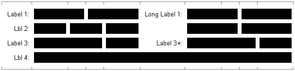

General
- Introduction
- Canonical Grids
- Usage
- Examples
- Using in Maven Project
- Building from sources
Project Documentation

The idea of user interfaces based on canonical grids is described in the book Designing Visual Interfaces: Communication Oriented Techniques by Kevin Mullet and Darrell Sano. Available online, Patrizia Nanni's thesis Human-Computer Interaction: Principles of Interface Design has a nice chapter called Module and Program: Grid-based Design, which also references Mullet and Sano's work.
Canonical grids are visual tools used by graphic artists to design magazines, posters, advertisements, forms, and so forth. As an artist friend told the original author of DesignGridLayout, the use of grids is "graphic design 101, taught on the first day".
Here are the steps to create a simple 4 column canonical grid. First, divide the rectangle horizontally into halves (1/2). The light gray represents the gaps (for gutters and margins) between columns.

Then add divisions for thirds (1/3).

Lastly, add divisions for fourths (1/4).

Voila! The black lines represent the 4 column canonical grid.
For each row, the row is divided by the number of components you add. Adding two components divides the grid in half. Adding three components divides the grid in thirds.
So here's an example.

See how everything lines up nicely? There's two interesting cases to note.
Normal Canonical grids work well as long as we don't use a label column. Indeed, it is common to have forms that have a first column made exclusively of labels defining the fields that follow.
For this reason, DesignGridLayout extends the possibilities of canonical grids by putting the extra label column outside of the grid, which means that its width is always fixed (and equal to the largest width of all labels put in that column).
However, it is also not uncommon to have forms that have several vertical "groups" of input fields, each with their own label column. DesignGridLayout supports this through the use of "sub-grids".
The "sub-grid" concept is defined as follows:
The example below summarizes these principles:
In this example you can see 2 sub-grids, each with its label column (of different widths due to the max length of labels). Canonical parts of both sub-grids are equal in size. In the second row, there is no label for the second sub-grid. Finally, the last row has only one sub-grid that spans both sub-grids defined in other rows.
You will find more concrete examples here.